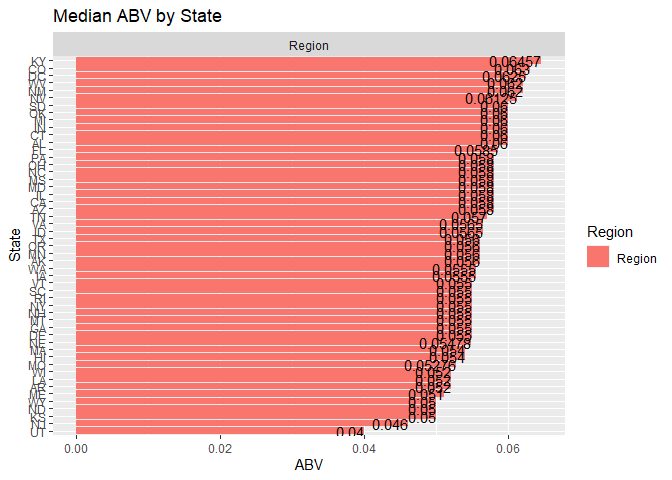
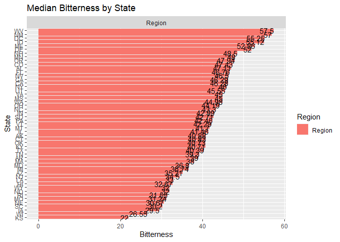
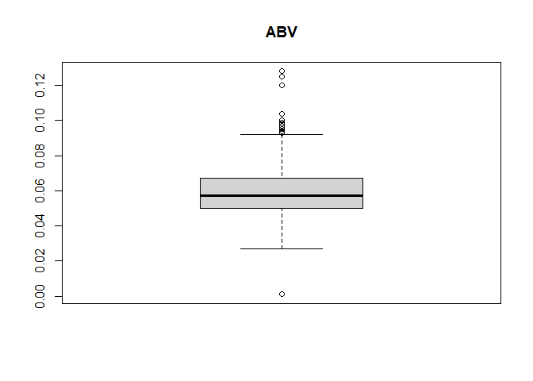
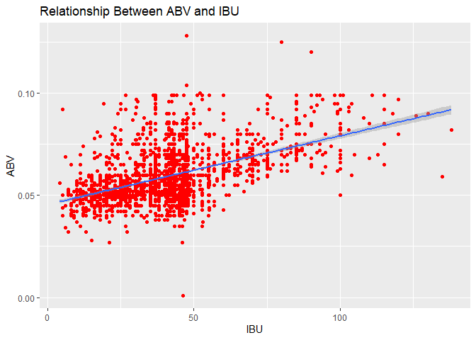
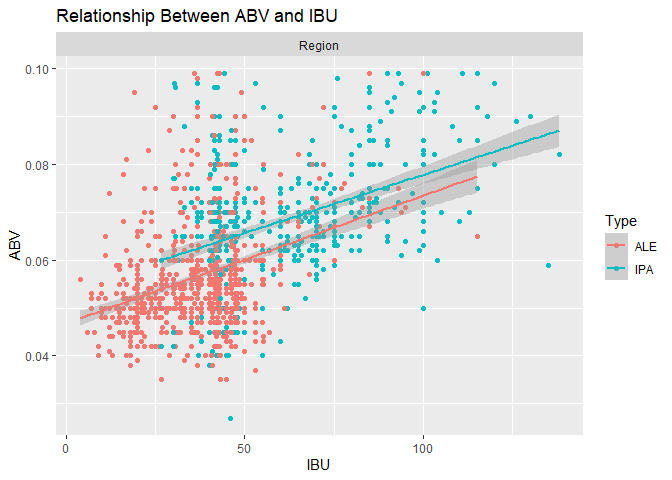
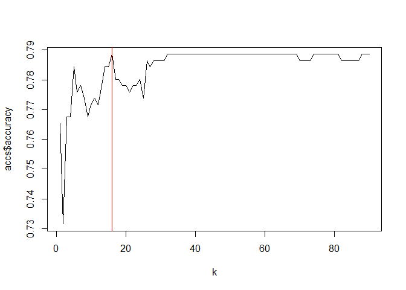

Introduction
In the below report, we have been provided two datasets for various beers and the breweries that produce them in the US. Our team had to do an exploratory Data Analysis on the data provided to come up with useful insights.
We were provided with two separate datasets, one with details of the beers and and the other with the details of the breweries around the USA. To analyze this
Reproducible Research in R
Please begin by reading the the README.md.All the details on the structure of project has been documented.
Loading Packages for Analysis
Below are the packages required for the analysis of the Craft Beer and Brewery study.
library(dplyr)##
## Attaching package: 'dplyr'## The following objects are masked from 'package:stats':
##
## filter, lag## The following objects are masked from 'package:base':
##
## intersect, setdiff, setequal, unionlibrary(usdata)
library(maps)
library(ggplot2)
library(dplyr)
library(usmap)
library(magrittr)
library(kableExtra)##
## Attaching package: 'kableExtra'## The following object is masked from 'package:dplyr':
##
## group_rowslibrary(xtable)
library(RSQLite)
library(proto)
library(gsubfn)
library(sqldf)
library(class)
library(caret)## Loading required package: latticeLoading the Datasets for Analysis
We were provided with 2 datasets (beers and breweries). The breweries dataset contains the count of breweries from 50 states of the US and the beer data set contains the details of the beers (Alcohol by Volume Content and International Bitterness unit)
Note : Beers dataset contains a list of 2410 US craft beers and Breweries dataset contains 558 US breweries.
Region Data : This is the data set we created for analysis group the 50 states in US into 4 regions North Central,North East , South and West
##Cleaning the data
Breweries=read.csv("data/Breweries.csv")
Beers=read.csv("data/Beers.csv")
#Bring in Region Data
RegionData = data.frame(State = state.abb, Region = state.region)
Breweries = left_join(Breweries,RegionData,by = "State")3. Research Questions
We are now going to analyze the research questions for EDA
1. How many breweries are present in each state?
Here we used the breweries dataset to count the number of breweries per state in the US.
Output : We were able to find Colorado and California to have the highest number of Craft breweries in US.
kable(count(Breweries,State))| State | n |
|---|---|
| AK | 7 |
| AL | 3 |
| AR | 2 |
| AZ | 11 |
| CA | 39 |
| CO | 47 |
| CT | 8 |
| DC | 1 |
| DE | 2 |
| FL | 15 |
| GA | 7 |
| HI | 4 |
| IA | 5 |
| ID | 5 |
| IL | 18 |
| IN | 22 |
| KS | 3 |
| KY | 4 |
| LA | 5 |
| MA | 23 |
| MD | 7 |
| ME | 9 |
| MI | 32 |
| MN | 12 |
| MO | 9 |
| MS | 2 |
| MT | 9 |
| NC | 19 |
| ND | 1 |
| NE | 5 |
| NH | 3 |
| NJ | 3 |
| NM | 4 |
| NV | 2 |
| NY | 16 |
| OH | 15 |
| OK | 6 |
| OR | 29 |
| PA | 25 |
| RI | 5 |
| SC | 4 |
| SD | 1 |
| TN | 3 |
| TX | 28 |
| UT | 4 |
| VA | 16 |
| VT | 10 |
| WA | 23 |
| WI | 20 |
| WV | 1 |
| WY | 4 |
1a. Visualization of count of Breweries grouped by Region/State
Below is the visual analysis of the count of breweries per state. For further clarity we grouped states of the US into 4 regions North Central, North East, South and West.
Observation : The South and West Region have the highest number of breweries
#Brewery Count by State
#Breweries %>%
# group_by(State,Region) %>%
#summarize(Count = n()) %>%
#ggplot(aes(x = reorder(State,-Count), y = Count,fill=Region)) +
#geom_bar(stat = "identity") +
#geom_text(aes(label=Count),vjust=2) +
#ggtitle("Brewery Count by State",) + xlab("State") + ylab("Count") +
#facet_wrap(~Region, scales="free") +
#theme(plot.title=element_text(hjust=0.5)) 2. Merge beer data with the breweries data. Print the first 6 observations and the last six observations to check the merged file.
Here we merged the both the datasets into a single dataset Distilled_Data. By which we can find the beers made in by each state in United States.
The Brewery_id column name in the Beers data was changed to Brew_id for merging both datasets
#Bring in Region Data
RegionData = data.frame(State = state.abb, Region = state.region)
Breweries = left_join(Breweries,RegionData,by = "State")
#Handle NA and missing data by replacing with Regional Means
Breweries = sqldf('
select
"Brew_ID","Name","City","State",
case when "State" = "DC" then "South" else "Region" end as Region
from
Breweries
')
Distilled_Data = merge(Beers,Breweries, by.x = "Brewery_id", by.y = "Brew_ID")
#Distilled_Data = left_join(Beers,Distilled_Data,by = "Beer_ID")
kable(head(Distilled_Data))| Brewery_id | Name.x | Beer_ID | ABV | IBU | Style | Ounces | Name.y | City | State | Region |
|---|---|---|---|---|---|---|---|---|---|---|
| 1 | Get Together | 2692 | 0.045 | 50 | American IPA | 16 | NorthGate Brewing | Minneapolis | MN | Region |
| 1 | Maggie’s Leap | 2691 | 0.049 | 26 | Milk / Sweet Stout | 16 | NorthGate Brewing | Minneapolis | MN | Region |
| 1 | Wall’s End | 2690 | 0.048 | 19 | English Brown Ale | 16 | NorthGate Brewing | Minneapolis | MN | Region |
| 1 | Pumpion | 2689 | 0.060 | 38 | Pumpkin Ale | 16 | NorthGate Brewing | Minneapolis | MN | Region |
| 1 | Stronghold | 2688 | 0.060 | 25 | American Porter | 16 | NorthGate Brewing | Minneapolis | MN | Region |
| 1 | Parapet ESB | 2687 | 0.056 | 47 | Extra Special / Strong Bitter (ESB) | 16 | NorthGate Brewing | Minneapolis | MN | Region |
kable(tail(Distilled_Data))| Brewery_id | Name.x | Beer_ID | ABV | IBU | Style | Ounces | Name.y | City | State | Region | |
|---|---|---|---|---|---|---|---|---|---|---|---|
| 2405 | 556 | Pilsner Ukiah | 98 | 0.055 | NA | German Pilsener | 12 | Ukiah Brewing Company | Ukiah | CA | Region |
| 2406 | 557 | Heinnieweisse Weissebier | 52 | 0.049 | NA | Hefeweizen | 12 | Butternuts Beer and Ale | Garrattsville | NY | Region |
| 2407 | 557 | Snapperhead IPA | 51 | 0.068 | NA | American IPA | 12 | Butternuts Beer and Ale | Garrattsville | NY | Region |
| 2408 | 557 | Moo Thunder Stout | 50 | 0.049 | NA | Milk / Sweet Stout | 12 | Butternuts Beer and Ale | Garrattsville | NY | Region |
| 2409 | 557 | Porkslap Pale Ale | 49 | 0.043 | NA | American Pale Ale (APA) | 12 | Butternuts Beer and Ale | Garrattsville | NY | Region |
| 2410 | 558 | Urban Wilderness Pale Ale | 30 | 0.049 | NA | English Pale Ale | 12 | Sleeping Lady Brewing Company | Anchorage | AK | Region |
3.Address the missing values in each column.
To proceed with data analysis we first inspected both the datasets for any missing value.
1.Beer Dataset :
- International Bitterness Unit : Out of the 2410 beers - 1405 beers were missing IBU value
- Alcohol By Volume : Out of the 2410 beers - 62 beers were missing ABV content value
2.Breweries Dataset : + No missing data
To deal with this anomaly and unbiased data analysis we populated the missing values in the Beer Data. We populated the missing values with the mean of respective region/State.
#Create table for IBU and ABV means by State and Region - excluding missing data
State_Means =
Distilled_Data[!is.na(Distilled_Data$ABV) & !is.na(Distilled_Data$IBU),] %>%
group_by(State) %>%
summarize(Mean_IBU_by_State = mean(IBU),
Mean_ABV_by_State = mean(ABV))
Regional_Means =
Distilled_Data[!is.na(Distilled_Data$ABV) & !is.na(Distilled_Data$IBU),] %>%
group_by(Region) %>%
summarize(Mean_IBU_by_Region = mean(IBU),
Mean_ABV_by_Region = mean(ABV))
Distilled_Data = left_join(Distilled_Data,State_Means,by = "State")
Distilled_Data = left_join(Distilled_Data,Regional_Means,by = "Region")
Distilled_Data2 = Distilled_Data
Distilled_Data2 =
Distilled_Data2 %>%
mutate(ABV = coalesce(Distilled_Data2$ABV,Distilled_Data2$Mean_ABV_by_State),
IBU = coalesce(coalesce(Distilled_Data2$IBU,Distilled_Data2$Mean_IBU_by_State),Distilled_Data2$Mean_IBU_by_Region))4.Compute the median alcohol content and international bitterness unit for each state. Plot a bar chart to compare.
Calculation of the median Alcohol content of each state grouped by region
+4a. Median Alcohol Content
Distilled_Data2 %>%
group_by(State,Region) %>%
summarize(
Median_Alcohol_Content = round(median(ABV,na.rm=TRUE),digits=5),
Median_Bitterness = median(IBU,na.rm=TRUE)
) %>%
ggplot(aes(reorder(x = State,Median_Alcohol_Content), y = Median_Alcohol_Content,fill=Region)) + geom_bar(stat="identity") +
xlab("State") + ylab("ABV") + ggtitle("Median ABV by State") + facet_wrap(~Region, scales="free") +
geom_text(aes(label=round(Median_Alcohol_Content,digits=6)),hjust=1) +
coord_flip()## `summarise()` has grouped output by 'State'. You can override using the `.groups` argument. ### 4b. Median Internation Bitterness Unit Content
Calculation of the median International Biiterness Unit of each state grouped by region
#Median Bitterness
Distilled_Data2 %>%
group_by(State,Region) %>%
summarize(
Median_Bitterness = median(IBU,na.rm=TRUE),
Median_Alcohol_Content = median(ABV,na.rm=TRUE)
) %>%
ggplot(aes(reorder(x = State,Median_Bitterness), y = Median_Bitterness,fill=Region)) + geom_bar(stat="identity") +
xlab("State") + ylab("Bitterness") + ggtitle("Median Bitterness by State") + coord_flip() +
geom_text(aes(label=round(Median_Bitterness,digits=2)),hjust=1) +
facet_wrap(~Region, scales="free") ## `summarise()` has grouped output by 'State'. You can override using the `.groups` argument. ## 5.Which state has the maximum alcoholic (ABV) beer? Which state has the most bitter (IBU) beer?
5a. Most Alcoholic Beer in US
Observation : Upon analysis the beer with maximum alcohol is made in the Lee Hill Series Vol.5 made in Colorado West
#Which State has the maximum alcoholic ABV beer?
Top_ABV = Distilled_Data2[order(-Distilled_Data2$ABV),]
kable(head(Top_ABV,1))| Brewery_id | Name.x | Beer_ID | ABV | IBU | Style | Ounces | Name.y | City | State | Region | Mean_IBU_by_State | Mean_ABV_by_State | Mean_IBU_by_Region | Mean_ABV_by_Region | |
|---|---|---|---|---|---|---|---|---|---|---|---|---|---|---|---|
| 375 | 52 | Lee Hill Series Vol. 5 - Belgian Style Quadrupel Ale | 2565 | 0.128 | 47.43151 | Quadrupel (Quad) | 19.2 | Upslope Brewing Company | Boulder | CO | Region | 47.43151 | 0.0648356 | 42.71317 | 0.0599139 |
5b. Most Bitter Beer in US
Observation : Upon analysis the beer with maximum bitter content is Bitter Bitch Imperial IPA made in Oregano in West Region
Most_Bitter = Distilled_Data2[order(-Distilled_Data2$IBU),]
kable(head(Most_Bitter,1))| Brewery_id | Name.x | Beer_ID | ABV | IBU | Style | Ounces | Name.y | City | State | Region | Mean_IBU_by_State | Mean_ABV_by_State | Mean_IBU_by_Region | Mean_ABV_by_Region | |
|---|---|---|---|---|---|---|---|---|---|---|---|---|---|---|---|
| 1857 | 375 | Bitter Bitch Imperial IPA | 980 | 0.082 | 138 | American Double / Imperial IPA | 12 | Astoria Brewing Company | Astoria | OR | Region | 47.94253 | 0.0567011 | 42.71317 | 0.0599139 |
6. Comment on the summary statistics and distribution of the ABV variable.
Observation : Upon analysis the beer with maximum bitter content is
Bitter Bitch Imperial IPAmade in Oregano in West Region
7. Is there an apparent relationship between the bitterness of the beer and its alcoholic content? Draw a scatter plot. Make your best judgment of a relationship and EXPLAIN your answer.

8. Use KNN to differentiate the beer from Ale or IPA Beer


#Train / Test KNN